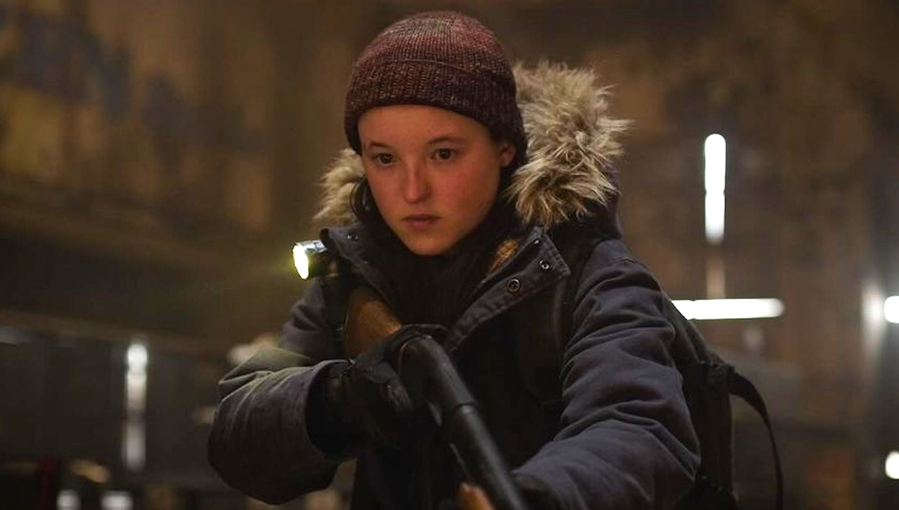
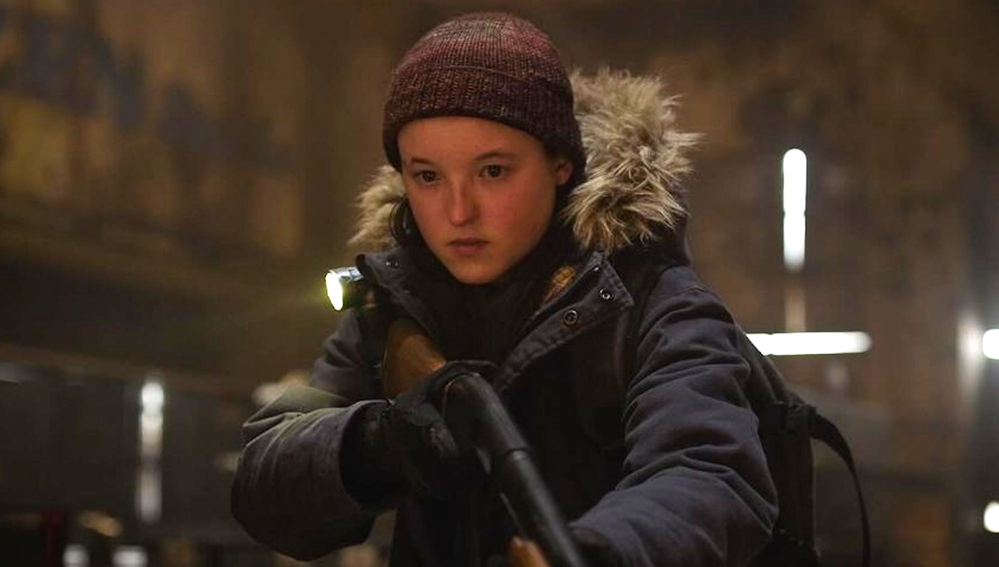

Ellie Williams
 

Ellie Williams – A esperança em meio ao caos
Jovem imune, esperta, resiliente e impulsiva, mas leal. Cresceu em um mundo devastado e é um dos pilares emocionais da saga, enfrentando perdas, dilemas morais e a luta entre o amor e a vingança.
Uma das figuras mais icônicas e emocionantes da franquia The Last of Us, sendo protagonista ou co-protagonista em praticamente todas as produções da série, incluindo os jogos The Last of Us Part I, Left Behind, Part II, além dos quadrinhos American Dreams e da aclamada adaptação televisiva da HBO.
Criada em um mundo devastado por uma pandemia global, Ellie cresceu na zona de quarentena de Boston, onde aprendeu desde cedo a sobreviver e a questionar a autoridade. Inteligente, corajosa e com um senso de humor afiado, ela rapidamente se destacou como muito mais do que apenas mais uma sobrevivente. Sua história ganha força quando é revelado que ela possui algo extremamente raro — algo que pode mudar o rumo da humanidade.
Ao lado de Joel, um contrabandista com um passado sombrio, Ellie embarca em uma jornada arriscada por um país em ruínas. Ao longo do caminho, os dois enfrentam inimigos, perdas e dilemas morais profundos, criando um vínculo que se torna o coração emocional da saga. Com o tempo, ela precisa confrontar os horrores do mundo e de si mesma, lutando para preservar sua humanidade em um cenário onde tudo parece estar perdido.
Uma personagem, muitas dimensões
Nos jogos, Ellie é dublada e interpretada com maestria por Ashley Johnson, cuja performance emocional e poderosa ajudou a definir os padrões para personagens femininas nos videogames modernos. Já na série da HBO, ela ganha vida através da interpretação de Bella Ramsey, que trouxe uma nova camada de profundidade à personagem, conquistando o público e a crítica com sua autenticidade e intensidade.
Impacto e legado
Ellie representa mais do que uma protagonista de ação: ela é símbolo de resistência, perda, amor e transformação. Sua jornada é marcada por escolhas difíceis e momentos de rara beleza em um mundo brutal. Ao longo dos anos, ela se tornou uma das personagens mais aclamadas dos videogames e da televisão, com uma legião de fãs que se conectam com sua força, vulnerabilidade e humanidade. Ela não é apenas alguém que sobrevive, ela é alguém que luta para encontrar significado, mesmo quando tudo parece ruir ao seu redor. Seja nos jogos ou na série, sua história é um convite para explorar temas profundos com emoção, ação e intensidade. Se você ainda não conhece The Last of Us, a história dela é o ponto de partida ideal.
MBTI: ENTP / ESFP (Inovador / Artista)
Idade: 14 (Jogo 1), 19 (Jogo 2)